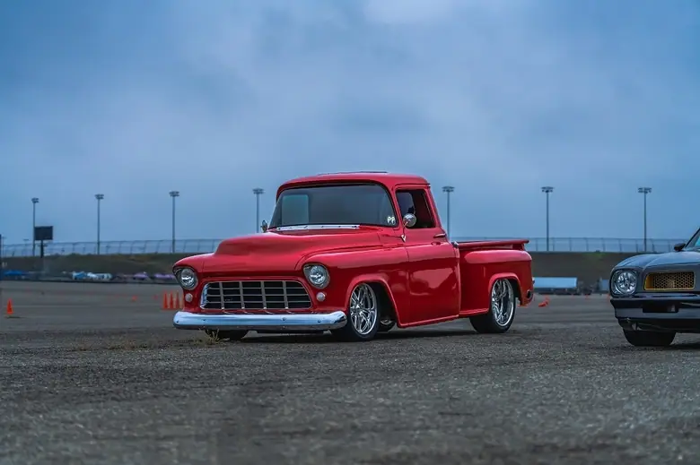
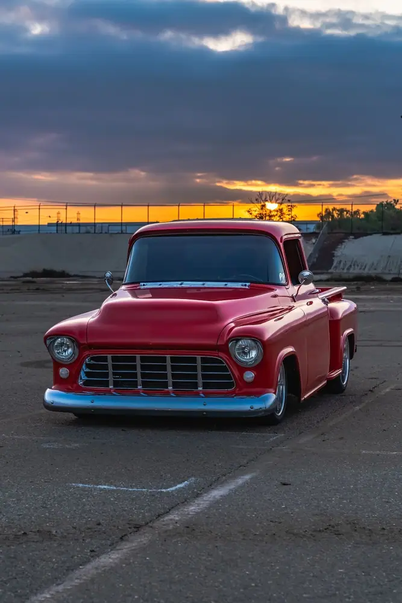
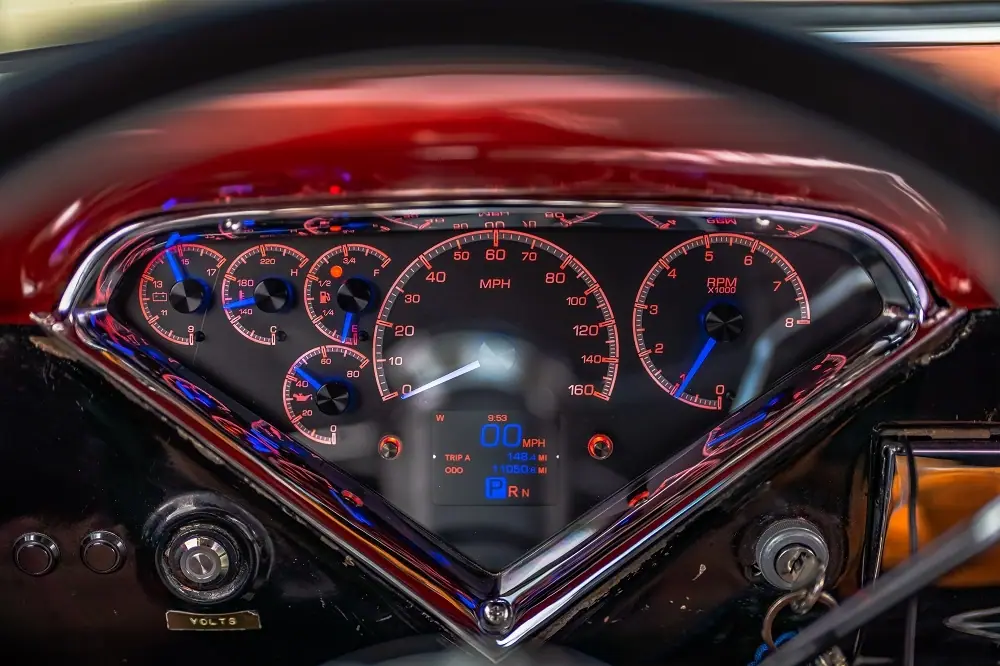
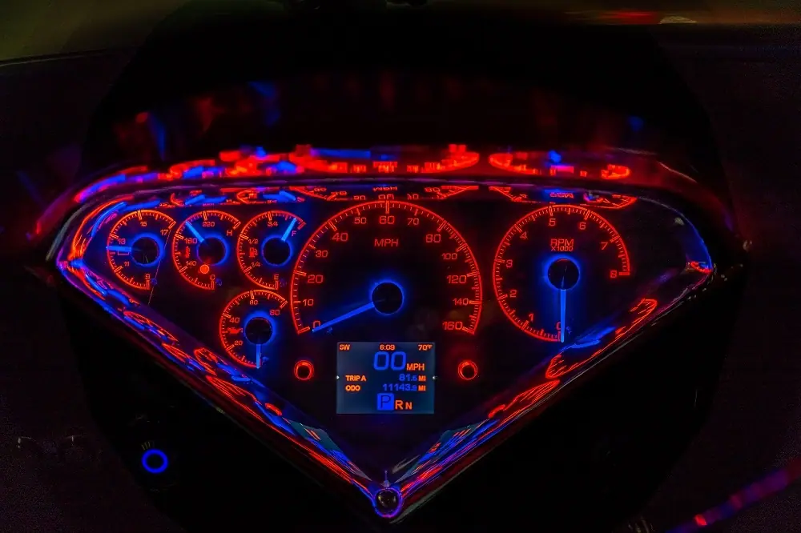
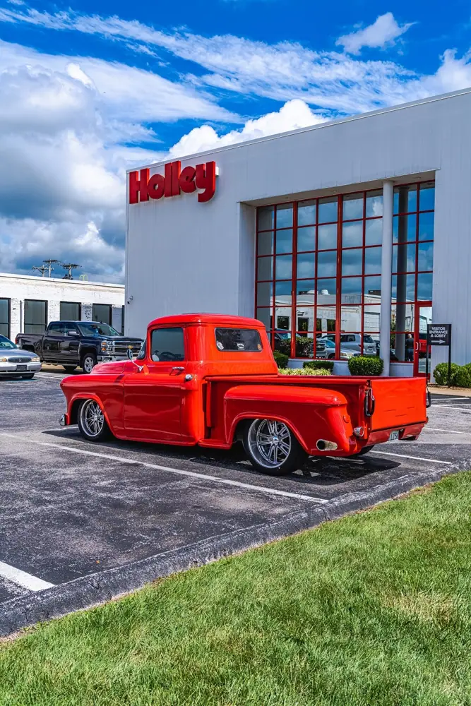
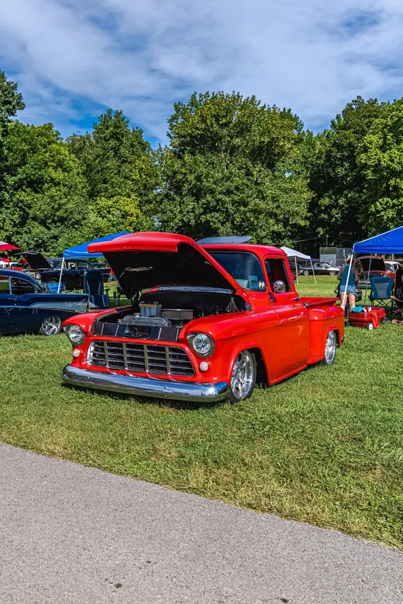

Estrada 1956 Chevy 3100

Bowling Green or BustIt doesn’t take long in this hobby to see trends come and go. Gone are the days of pastel body colors and giant polished blowers sticking out of the hoods, only to be replaced with late model LS type power plants and low-profile superchargers, or turbos tucked away and hidden behind headlights. Tubbed or “back halved” cars with giant rear tires are rare whereas bigger diameter stock looking “steelies” and small hub caps are becoming more common. One trend I’ve noticed the last few years is, people are driving their cars and trucks! I’m not talking about the Sunday cruise or Saturday night hang out. I’m referring to several thousand-mile road trips. Trailer queens seem to be a fad that is being replaced with quality-built drivers.
Will Estrada knows a thing or two about being on the road, a former Police Motorcycle Officer with the Glendale California PD, he’s spent plenty of time on the road on both 2 and 4 wheels. Will bought this 1956 Chevy 3100 pickup around 2014 and went to work on making it roadworthy. There is no hot rod shop to give credit to in this story, this truck was 100% disassembled, painted and reassembled in his garage. All modifications, upgrades and improvements were learned the hard way, trial and error. There is nothing cheap about this love affair we have with hot rods, but that is certainly one way to cut costs, DIY!
So how do you put your homebuilt hot rod to the test? Well, you drive it 2,000 miles from Fontana, California to Bowling Green, Kentucky for the annual Tri-Five Nationals in August. This is a huge show open to 55-56-57 Chevy cars, trucks and Corvettes held at Beech Bend Park. Will pointed his red truck named Daisy eastbound on I-40 (also Route 66) and 3 days later he and his father-in-law arrived in Kentucky. There was a small electrical gremlin from time to time, but regardless, they made the journey without any major issues. After 3 days in Bowling Green at the show, it was time to head back west along I-40 again.
Keeping track of their 4,100 plus miles throughout this adventure was Dakota Digitals direct fit HDX-55C-PU gauge system. Engineered to fit in the stock iconic “V” bezel, the large digital information screen kept racking up every mile on Will’s odometer. Another HDX feature that is handy on road trips, is the “range to empty” for your fuel consumption. Gas stops in Arizona and New Mexico can be few and far between so knowing how far you have left can help in the decision-making process! The HDX also gives the driver six analog style needle gauges to monitor all the other vitals, speed, tach, water, fuel, oil psi and volts. 30 nighttime colors can be programmed right from your phone with the integrated Bluetooth technology.
I don’t know if they actually stood on a corner in Winslow, Arizona (which is on I-40), and we didn’t talk if any girls in a flatbed Ford slowed down to take a look at them, but I’ll guarantee they took it easy and got plenty of looks on this great road trip.





Also on dakotadigital.com.